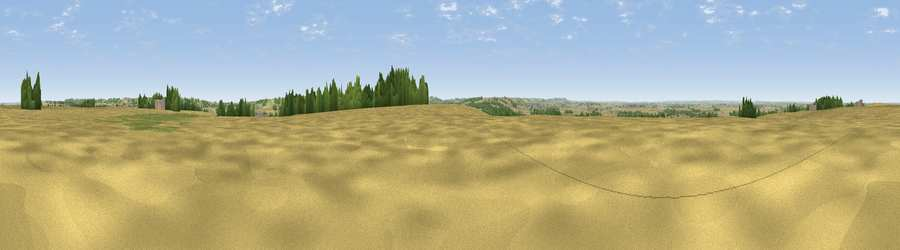

Summerfield's Hill
#24457 in England · top 32% of its area beats it · near HoningtonThe view, rendered

A 360° render of this exact spot computed from the terrain model, tree cover and land cover — summer colours, afternoon light, calibrated against photographs of famous viewpoints. Real trees, hedges and buildings will differ in detail.
The panorama
Grey silhouette: terrain skyline in each direction (720 bearings, Earth curvature and refraction included). Dashed green: skyline with trees (+15 m) and buildings (+8 m) as obstacles. Blue strip: how far the ground is visible on each bearing.
Where the view opens
Wedge length = distance to the farthest visible ground on that bearing (vegetation-aware). Rings at 10, 25 and 50 km.
What fills the view
68% cropland · 19% grassland · 11% woodland · 2% built-up
Angular shares of the visible panorama (visual magnitude), not map area. Landscape diversity 0.39 (0–1 Shannon).
Key numbers
More beautiful places nearby
The staircase of upgrades: each row has a higher view potential than everything closer. Driving times are estimates from straight-line distance, calibrated against real road routing — check an actual route before setting out.
| Place | Direction | Drive | Score |
|---|---|---|---|
| Summerfield's Hill | S · 0 km | ~1 min | 51.5 |
| Viewpoint near Great Gonerby | SSW · 4 km | ~10 min | 52.5 |
| Viewpoint near Great Gonerby | SSW · 5 km | ~11 min | 62.0 |
| Viewpoint near Belvoir | SW · 15 km | ~26 min | 70.8 |
| Viewpoint near Woodhouse Eaves | SW · 50 km | ~72 min | 77.7 |
| Viewpoint near Mow Cop | W · 106 km | ~131 min | 78.9 |
| Viewpoint near Mow Cop | W · 107 km | ~131 min | 80.2 |
| Viewpoint near Little Wenlock | WSW · 133 km | ~157 min | 84.2 |
52.98879, -0.63187 · source: osm peak · position refined by local search. Computed location — check access rights before visiting.